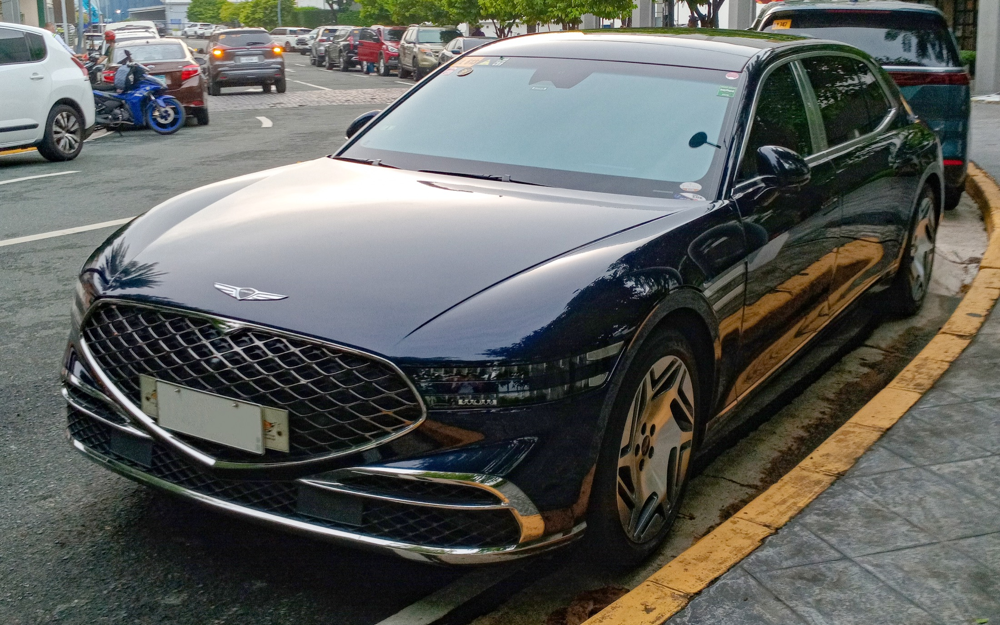
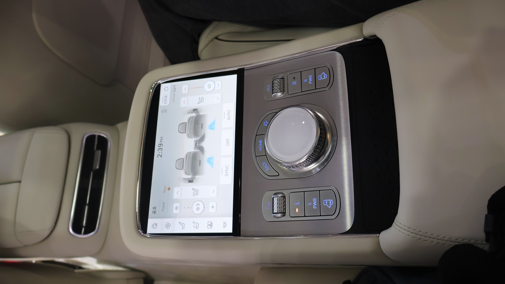

VIP Sedan
Genesis G90
役員訪問、カップル、美容相談後の静かな移動に適したプレミアムセダンです。
- 1〜3名のVIP移動
- 空港・ホテル・江南クリニック送迎
- 静粛性とプライバシー重視
空港送迎から江南クリニック、ホテル、K観光まで、必要な手配を日本語でまとめます。
到着ロビーで日本語対応スタッフがお迎えし、入国後すぐに安心して移動できるよう案内します。
美容施術後や買い物の多い日も無理なく移動できるよう、人数と目的に合う車両を手配します。
美容外科・皮膚科・歯科・韓方まで、ご希望の施術に合わせて相談先と通訳を調整します。
江南、明洞、弘大など、施術や観光の動線に合わせて滞在エリアを提案します。
江南・明洞・弘大・漢江などソウル中心の人気エリアから、釜山・慶州・済州など地方有名観光地まで目的に合わせて設計します。
滞在中の急な予定変更、体調不良、紛失物、交通相談などを日本語でサポートします。
少人数VIP、家族旅行、美容施術後の移動まで、人数と目的に合わせて快適な車両を手配します。

役員訪問、カップル、美容相談後の静かな移動に適したプレミアムセダンです。

長距離移動や施術後の休息時間まで考えた、静かな移動体験を提供します。
家族、友人グループ、荷物の多いショッピング日程に向いた広いバンタイプです。
荷物、買い物袋、同行者が多い日も、移動中の負担を抑えます。
韓国美容医療、Kビューティ、韓国文化を一つの滞在プランとして設計します。
二重、目元矯正、鼻先、鼻筋など、細かな印象設計が必要な施術を相談できます。
輪郭、リフト、たるみ改善など、回復期間を考えたスケジュールで調整します。
レーザー、ボトックス、フィラー、肌管理など、短期滞在でも組み込みやすいメニューです。
肌診断、エステ、ヘッドスパ、パーソナルカラーなど、観光と一緒に楽しめます。
ホワイトニング、矯正相談、審美歯科など、通訳が必要な相談もサポートします。
韓方、体質相談、ダイエット、スパ、チムジルバンなど、韓国らしいケアを提案します。
初めての韓国訪問では江南・明洞・景福宮など移動しやすいソウル中心ルートを基本に、滞在日数に合わせて釜山、慶州、済州などの地方名所も組み合わせます。
美容、観光、ショッピング、ビジネス訪問まで、必要な手配だけを組み合わせできます。
来韓前の相談から帰国後フォローまで、必要な範囲だけ選べます。
目的、日程、人数、希望エリアを日本語で確認します。
美容、観光、移動、ホテルの優先順位を整理します。
クリニック、車両、ホテル、食事、観光を調整します。
空港でお迎えし、初日の移動とチェックインを支援します。
医療通訳と観光ガイドを必要な時間だけ手配します。
韓国美容・観光コンシェルジュについてよくいただく質問です。
問題ありません。クリニック相談、ホテル、食事、観光まで日本語対応スタッフが必要な場面をサポートします。
可能です。予約代行のみ、通訳同行付き、車両付きなど必要な範囲で組み合わせできます。
通常の短期滞在ではビザ不要のケースが多いですが、制度は変更される場合があります。ご相談時に渡航目的と期間を確認します。
美容施術や人気店予約がある場合は3〜4週間前をおすすめします。直前でも可能な範囲を確認します。
来韓予定、人数、ご希望の美容・観光内容をお知らせください。